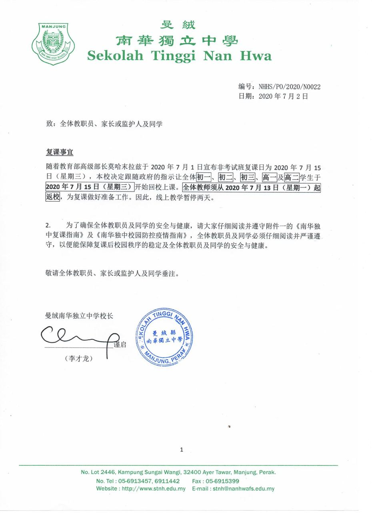
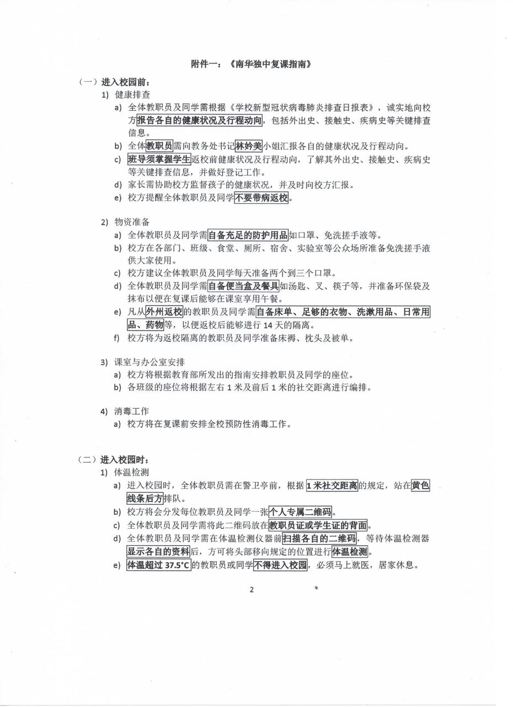
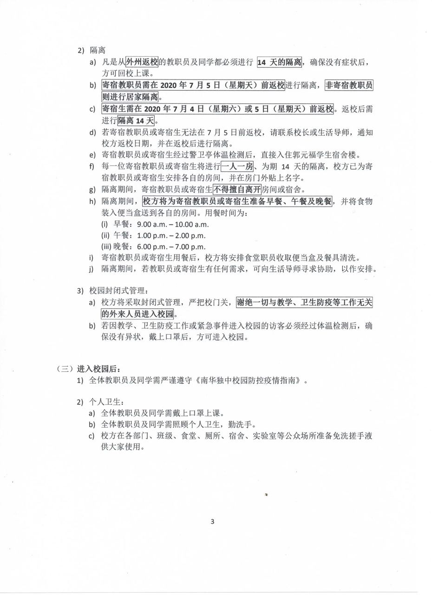
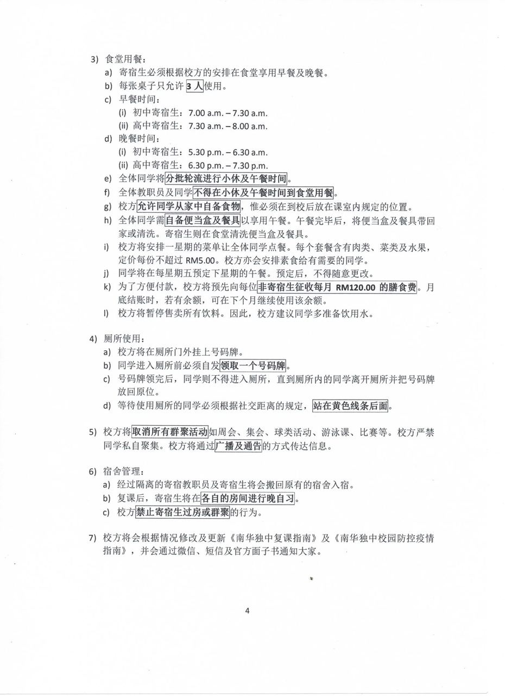
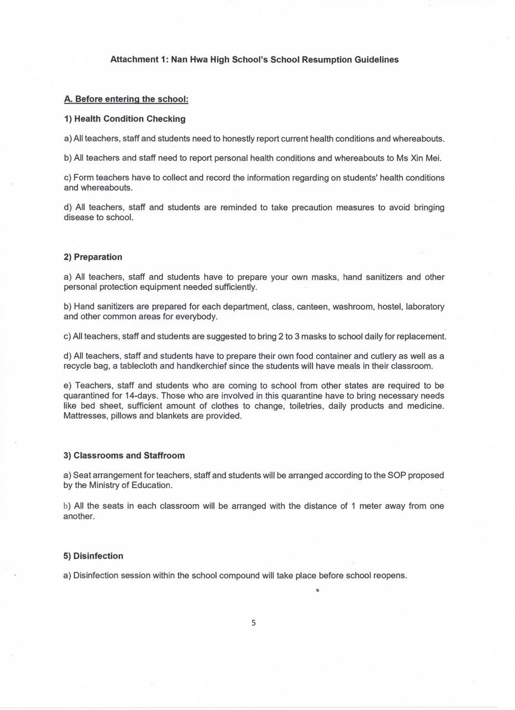
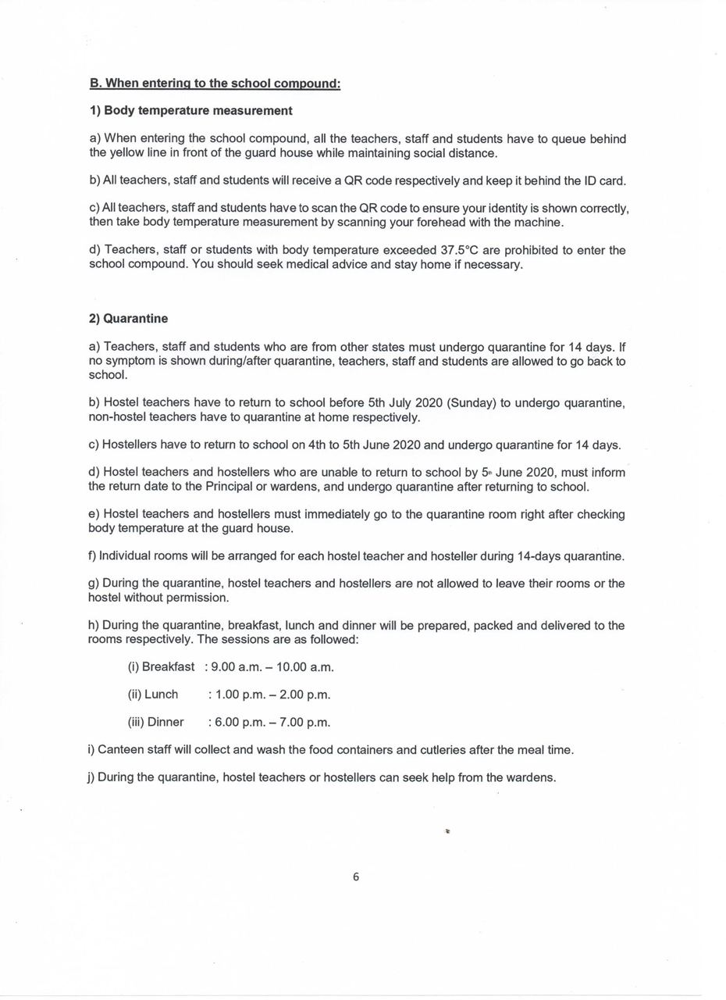
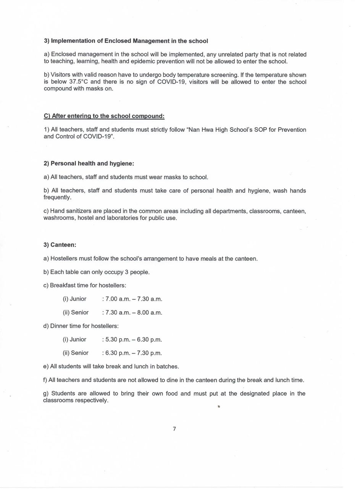
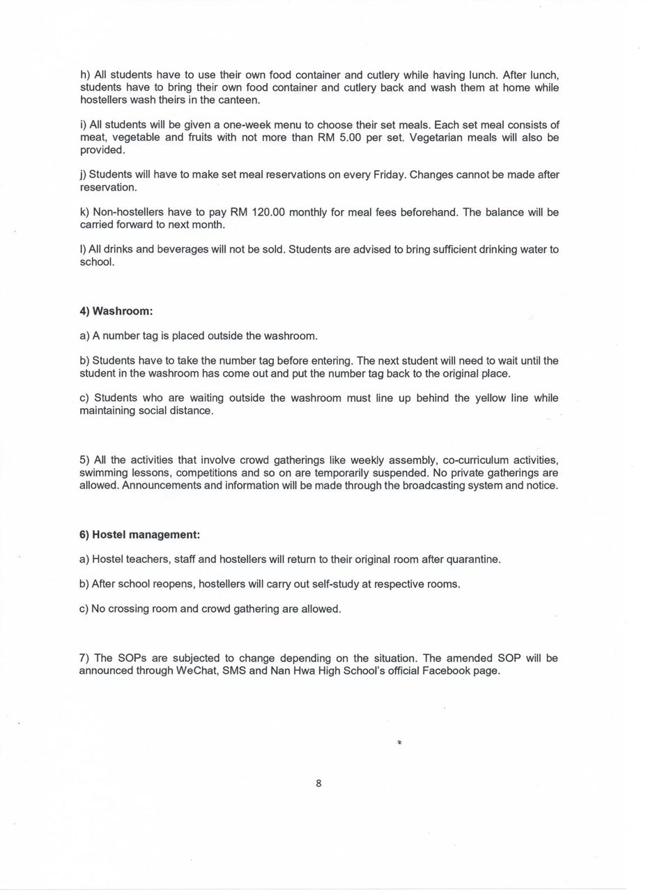

2/7/2020
2/7/2020
教育部高级部长莫哈末拉兹于2020 年 7 月 1 日宣布非考试班复课日为 2020 年 7 月 15 日。 因此本校也将在 7 月 15 日 全面复课，为了准备复课工作 7 月 13 日和 14 日暂停线上教学。
请所有复课的学生及家长阅读并遵守下列的《南华独中复课指南》及《南华独中校园防控疫情指南》以确保校园的稳定，以及全体教职员和学生的安全与健康。







